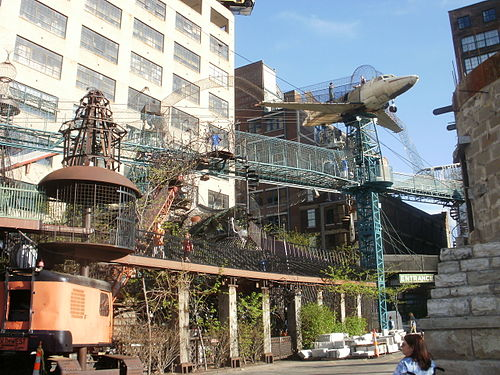
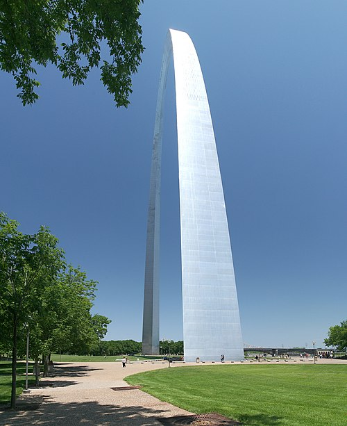

My HTML Page for Launch Code Assignment
Geetha
City MuseumCity Museum
Exhibits consist largely of repurposed architectural and industrial objects, housed in the former International Shoe building in the Washington Avenue Loft District of St. Louis, Missouri, United States. Opened in October 1997, the museum attracted more than 700,000 visitors in 2010.
ST Louis Gateway Arch
The Gateway Arch is a 630-foot-tall (192 m) monument in St. Louis, Missouri, United States. Clad in stainless steel and built in the form of a weighted catenary arch,[5] it is the world's tallest arch[4] and Missouri's tallest accessible building.
